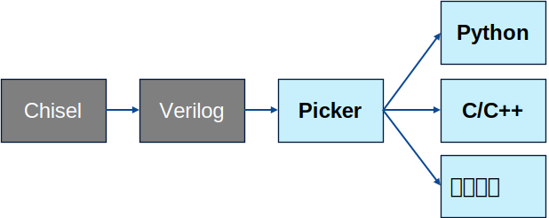

Basic Usage
Categories:
To meet the requirements of open verification environments, we have developed the Picker tool for converting RTL designs into multi-language interfaces for verification. We will use the environment generated by the Picker tool as the basis for our verification. Next, we will introduce the Picker tool and its basic usage.
Picker 简介
pickeris a chip verification auxiliary tool, aimed at encapsulating RTL design verification modules (.v/.scala/.sv) and exposingPin-Leveloperations in other programming languages. Future plans include supporting automated generation ofTransaction-Levelprimitives. Other programming languages supported include c++ (natively supported), python (supported), java (to be improved), and golang (to be improved) programming language interfaces. This tool allows users to perform chip UT verification based on existing software testing frameworks, such as pytest, junit, TestNG, and go test.
The advantages of using picker for verification are as follows:
- No RTL Design Leakage: After conversion by Picker, the original design file (.v) is transformed into a binary file (.so). Even after detaching from the original design file, verification can still be performed, and the verifier cannot obtain the RTL source code.
- Reduced Compilation Time: When the DUT (Design Under Test) is stable, compilation only needs to be done once (packaged into .so).
- Broad User Base: Provides multiple programming interfaces, covering developers of different languages (traditional IC verification uses only System Verilog).
- Rich Software Ecosystem: Can use python3, java, golang, and other ecosystems.
Currently, picker supports the following simulators:
verilator、synopsys vcs
Working Principle of Picker
The main function of Picker is to convert Verilog code into C++ or Python code. Taking the processor developed using Chisel as an example: first, use the tools provided by Chisel to convert it into Verilog code, and then use Picker to provide a high-level programming language interface based on the generated C++ or Python code.

Generating Python Modules
Process of Generating Modules
The way Picker exports Python Modules is based on C++.
- Picker is a code generation tool that generates project files first and then compiles them into binary files using make.
- Picker first uses a simulator to compile the RTL code into a C++ Class and compile it into a dynamic library. (See C++ step details)
- Based on the Swig tool, using the header file definition generated in the previous step, export the dynamic library as a Python Module.
- Finally, export the generated module to a directory and clean up or retain other intermediate files as needed.
Swig is a tool for exporting C/C++ to other high-level languages. The tool parses C++ header files and generates corresponding intermediate code. For more details about the generation process, please refer to the Swig official documentation. If you want to know how Picker generates C++ classes, please refer to C++.
- This module is the same as a standard Python module, can be imported and called by other Python programs, and the file structure is no different from a normal Python module.
Using Python Modules
- The parameter
--language pythonor--lang pythonis used to specify the generation of the Python base library. - The parameter
--example, -eis used to generate an executable file that includes example projects. - The parameter
--verbose, -vis used to retain intermediate files generated during project generation.
Generating Python DUT Classes
- After entering the compilation command for Picker, a basic class for Python is automatically generated, which we call the DUT class. Taking the previously verified adder as an example, users need to write test cases, i.e., import the Python Module generated in the previous section, and call its methods to operate on the hardware module. The directory structure is as follows:
picker_out_adder
|-- UT_Adder # Project generated by Picker tool
| |-- Adder.fst.hier
| |-- _UT_Adder.so
| |-- __init__.py
| |-- libDPIAdder.a
| |-- libUTAdder.so
| `-- libUT_Adder.py
`-- example.py # Code to be written by the user
- User writes test cases in Python, importing the generated Python Module and calling its methods to operate on hardware modules. Below is a brief introduction to the methods and attributes of the DUT.
# Initialize DUT, DUT() has two parameters:
# DUT(waveform_filename="report/uftb_with_ftq.fst", coverage_filename="report/uftb_with_ftq_coverage.dat")
# By default, if not specified, it will use the name specified when generating the Python class with Picker, and if the parameters are not specified in the command, the test report and waveform will not be generated
dut = DUT()
# Access signals, assuming the name of the pin is a
dut.a.value = 1 # Equivalent to dut.xdata.a.value
# Bind clk to the simulator's clock
dut.init_clock("clk") # Equivalent to self.xclock.Add("clk")
# Clock advance
dut.Step(n) # Equivalent to dut.xclock.Step(n)
# Add rising edge callback, parameter is the callback function # Equivalent to dut.xclock.StepRis(...)
dut.StepRis(lambda c, x, y: print("lambda ris: ", c, x, y), (1, 2))
# Add falling edge callback, parameter is the callback function # Equivalent to dut.xclock.StepFal(...)
dut.StepFal(lambda c, x, y: print("lambda fal: ", c, x, y), (3, 4))
# Asynchronous method, wait for clock events, the program will continue to execute downwards when the clock event is triggered.
dut.astep(n) # Equivalent to await self.xclock.AStep(n)
# Asynchronous method, check if conditions are met each time a clock event is triggered, and continue downwards only if the conditions are met.
dut.acondition(lambda: dut.signal_1.value == 1) # Equivalent to await dut.xclock.ACondition(lambda: dut.signal_1.value == 1)
# Asynchronous method, clock event, each time a clock is driven, the clock event is triggered once, and other coroutines can know that the clock has been driven by listening to the clock event.
dut.runstep(n) # Equivalent to dut..xclock.RunStep(n)
- The DUT class is a directly usable class created after the circuit is encapsulated. To use the DUT class, you first need to initialize it. For synchronous circuits, you also need to connect the clock signal to the analog clock. This allows us to control the circuit by calling the Step method, and access the signal by .value. Next, we will use the adder verified in the previous chapter as an example to explain in detail how to use the generated DUT class.
from UT_Adder import * # Import module from python package
import random
if __name__ == "__main__":
dut = DUTAdder() # Initialize DUT
# dut.init_clock("clk") # If the module has a clock, you need to initialize the clock, bind the clock signal to the simulator's clock, and automatically drive it
# reset
# dut.reset.value = 1
# dut.Step(1) # This step performs the initialization assignment operation
# dut.reset.value = 0 # Remember to reset the original signal after setting!
# For example, for the adder, operations on signals
dut.a.value = 1 # Assign input signal of dut, need to use .value
dut.b.value = 2
dut.cin.value = 0
dut.Step(1) # Update signal
print(f"sum = {dut.sum.value}, cout = {dut.cout.value}") # Read the output signal of dut, need to use .value
# Clear the object and complete the output work of coverage and waveform files (write to file)
dut.finalize()
- We can directly access certain methods through DUT, but most methods are encapsulated in three main data types of DUT class: XData, XPort, and XClock. These types represent different types of signals in the circuit. Through these data types, we can access and manipulate various signals in the circuit for simulation testing. In the following content, we will delve into the definition, source, and usage of these data types in actual simulation.
XDATA
- Generally, there are four states for a circuit: 0, 1, Z, and X. We define a data type named XData, bind it with the pins of the circuit, and read/write the IO interface of the circuit through DPI. This allows us to stimulate the circuit using software.
Initialization
# The initialization steps are automatically completed by Picker. This is just an introduction to the usage
# Initialize using XData, parameters are width and data direction (XData.In, XData.Out, XData.InOut)
a = XData(32, XData.In)
a.ReInit(16, XData.In) # ReInit method can reinitialize the XData instance
# Bind DPI, take the adder as an example, parameter is the C function
self.a.BindDPIRW(DPIRa, DPIWa)
self.b.BindDPIRW(DPIRb, DPIWb)
self.cin.BindDPIRW(DPIRcin, DPIWcin)
self.sum.BindDPIRW(DPIRsum, DPIWsum)
self.cout.BindDPIRW(DPIRcout, DPIWcout)
Main methods
# Using .value for access, there are multiple assignment methods
a.value = 12345 # Decimal assignment
a.value = 0b11011 # Binary assignment
a.value = 0o12345 # Octal assignment
a.value = 0x12345 # Hexadecimal assignment
a.value = '::ffff' # String assignment in ASCII code
d = XData(32,XData.In) # Same type assignment
d = a
a.value = 0xffffffff
# Using with the ctype library
a.W(); # Convert to uint32
a.U(); # Convert to uint64
a.S(); # Convert to int64
a.B(); # Convert to bool
a.String() # Convert to string
# .value supports access using [] by subscript, with the index starting from 0 as the least significant bit
a[31] = 0 # a.value = 0x7ffffffff
a.value = "x" # Assign high impedance state
# When outputting high impedance and indeterminate states, use string output
# print(f"expected x, actual {a.String()}")
# a.value = "000000??"
# 000000?? represents an indeterminate and high impedance state, and when this result appears, the circuit is generally problematic
a.value = "z" # Assign indeterminate state
# a.value = "000000??"
# Set pin mode: XData.Imme for immediate writing, XData.Rise for rising edge writing, XData.Fall
# for falling edge writing. XData defaults to rising edge writing. In immediate write mode, true timing circuits can be simulated without the need for the Step method to directly update values
a.SetWriteMode(XData.Imme)
XPORT
- When dealing with a few XData pins, directly manipulating XData is clearer and more intuitive. However, when dealing with multiple XData, batch management is not very convenient. XPort is an encapsulation of XData, which allows us to operate on multiple XData in a centralized manner. We also provide some methods to facilitate batch management.
Initialization and adding pins
port = XPort("p") #Create an instance of XPort
Main methods
# Use the Add method to add pins
port.Add("a",a) # Add pin
port.Add("b",b) # Add pin
# Access pins using []
port["b"]
# Using [].value to access the value of the pin
port["b"].value = 1
# Connect method to connect two Ports. If both connected ports are InOut types, the data flow direction is Port_2->Port_1
# If one is In and one is Out, the data flow direction is Out->In. The connection should be named as: xx_A Connect yy_A
a = XData(32,XData.In)
b = XData(32,XData.Out)
port_1 = XPort("p")
port_2 = XPort("p1")
port_1.Add("c",a)
port_2.Add("c",b)
port_2.Connect(port_1)
# Return the number of pins
port.PortCount()
# Flip method to flip the pin input and output mode
port.Flip()
# AsBiIo method to change the pin direction to bidirectional
a.AsBiIO()
# Write all rising edge pins with DPI
port.WriteOnRise()
# Write all falling edge pins with DPI
port.WriteOnFall()
# Use ReadFresh to refresh the value of the read pin
port.ReadFresh(XData.In)
# Use SetZero method to set the value of the pin to 0
port.SetZero()
print(f"expected 0, actual {port['a'].value}")
# port['a'].value = 0
XClock
- XClock is an encapsulation of the circuit clock, used to drive the circuit. In traditional simulation tools (such as Verilator), you need to manually assign values to clk and update the state through the step_eval function. However, in our tool, we provide corresponding methods that can directly bind the clock to XClock. Just use our Step() method to update both clk and the circuit state at the same time.
Initialization and adding pins
# Initialization
clk = XClock(lambda a: 1 if print("lambda stp: ", a) else 0) #The stepfunc parameter is the circuit advancement method provided by the DUT backend, such as verilator's step_eval, etc.
Main methods
# Use the Add method to add pins
clk.Add(XData) # Add clk pin
# In the generated DUT, we automatically generate the init_clock(self,name:str) function, call dut.init_clock(name:str), and can also be bound, for example: dut.init_clock(clk)
clk.Add(XPort) # Add Port
# Update state
clk.Step(1) # Parameter is UInt i, indicating advance i steps
# Reset
clk.Reset()
# Drive the circuit execution without updating the waveform (for combinatorial logic, use with caution)
clk.eval()
# Drive the circuit execution and update the waveform (not recommended)
clk.eval_t()
# Add rising edge callback, parameter is callback function
clk.StepRis(lambda c, x, y: print("lambda ris: ", c, x, y), (1, 2))
# Add falling edge callback, parameter is callback function
clk.StepFal(lambda c, x, y: print("lambda fal: ", c, x, y), (3, 4))
Although the callback for rising or falling edges can effectively verify, as mentioned earlier, the traditional callback mode, especially when nested multiple layers, can make the code difficult to read and maintain, often referred to as “callback hell”. Therefore, we also provide asynchronous methods for verification, which can simplify the code structure and improve readability.
Async & Event
In Python, asynchronous programming is replaced by the asyncio library and the async/await syntax, replacing the traditional callback mode. This approach provides a more intuitive and concise way to handle asynchronous operations, especially when multiple asynchronous operations need to be executed in sequence.
The asyncio library introduces coroutines, which are lightweight threads implemented through generators. Coroutines allow concurrent execution within a single Python thread without the need for multithreading or multiprocessing, avoiding the overhead of thread switching and the complexity of inter-process communication. If you want to learn more about the asyncio library, you can refer to the asyncio official documentation.
Using the async/await syntax, you can write asynchronous code in a way that is as intuitive as synchronous code. You can use async to define a function as a coroutine, and then use await inside the function to suspend and wait for the completion of an asynchronous operation. This way, when a coroutine is waiting, the event loop can continue to execute other coroutines until the current coroutine can continue to execute. Here’s a brief introduction on how to use asynchronous programming for verification.
Clock Events (Event)
The generated Python module provides basic asynchronous functions to facilitate the writing of asynchronous test cases.
Specifically, we set a clock event in each Python module generated by Picker, and provide asynchronous interfaces around this event. This clock event can be obtained by accessing the event attribute of each instance, such as dut.event.
Also, the event can be obtained from each interface of dut. This is because we define the interface as XPin, which contains the xdata of the interface and the global clock event, so you can get the global clock signal corresponding to the interface by dut.signal_1.event. This helps us to get the global clock signal corresponding to the interface when we can only access one interface.
Using Async
The clock event mentioned above is the core of the asynchronous function. Here we will introduce how to use the clock event to achieve asynchronous functionality.
First, we need to create a coroutine object and add it to the event loop to drive the global clock. This can be done as follows:
asyncio.create_task(dut.xclock.RunStep(10))
This will drive the clock 10 times in the “background” without blocking the currently executing code. But how do other coroutines know that the clock has been driven once? This is where the clock event comes in. In the RunStep function, each time the clock is driven, the clock event is triggered, and other coroutines can learn that the clock has been driven by listening to the clock event. For example:
async def other_task():
# Loop 10 times
for _ in range(10):
# Wait for a clock step
await dut.xclock.AStep(1)
# Print a message after each step
print(f"Clock has been ticked")
dut.xclock.AStep encapsulates waiting for the clock event, and the program will continue to execute after the clock event is triggered. We can also directly use await dut.event.wait() to wait for the clock event directly. Through this asynchronous method, we can create multiple tasks at the same time, each task can wait for the clock event to be triggered, thus achieving the concurrent execution of multiple tasks.
We have done the necessary work to ensure that all tasks that can be executed before the next clock event will be executed, and will be blocked by the next clock event.
Here is a complete example:
import asyncio
# Create the device instance
dut = UT_mydut()
# Initialize the device clock
dut.init_clock("clk")
# Define an asynchronous function to simulate other tasks
async def other_task():
for _ in range(10):
# Wait for clock stepping
await dut.xclock.AStep(1)
# Print a message indicating the clock has stepped
print(f"Clock has been ticked")
# Define an asynchronous test function
async def my_test():
# Create and start a clock task
clock_task = asyncio.create_task(dut.xclock.RunStep(10))
# Create and start other tasks
asyncio.create_task(other_task())
# Wait for the clock task to complete
await clock_task
asyncio.run(my_test())
In addition to RunStep and AStep, we also provide a utility function xclock.ACondition for more complex conditional waits, such as await dut.xclock.ACondition(lambda: dut.signal_1.value == 1). This will check if the condition is met every time a clock event is triggered, and continue execution if it is.
Custom Asynchronous Events
If you need to instantiate several Event or Queue objects for certain functionalities during asynchronous use, you should use the Event and Queue implementations provided in the xspcomm library, rather than using asyncio.Event and asyncio.Queue from the Python standard library. This ensures that all triggerable custom events will be triggered before the next cycle arrives.
Easier Asynchronous Use
The dut provided by Picker only provides basic asynchronous functionality. If you need more convenient asynchronous usage, you can refer to the documentation of the mlvp library, which provides more rich asynchronous interfaces.